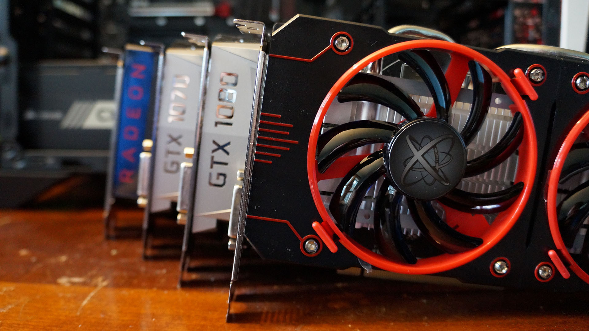
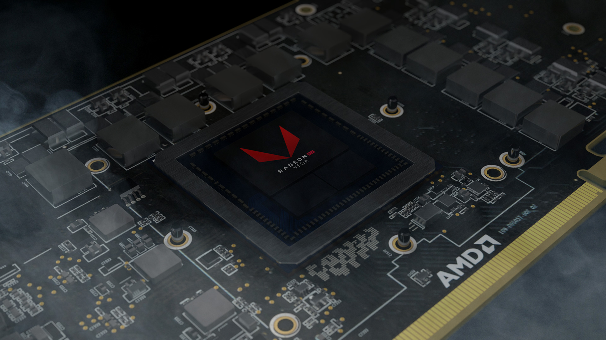
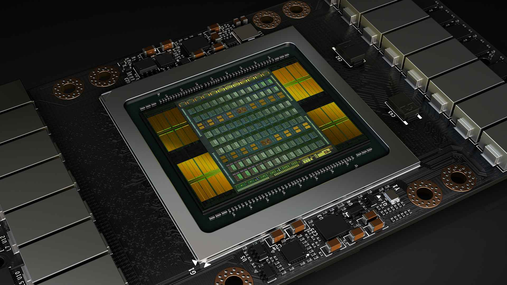
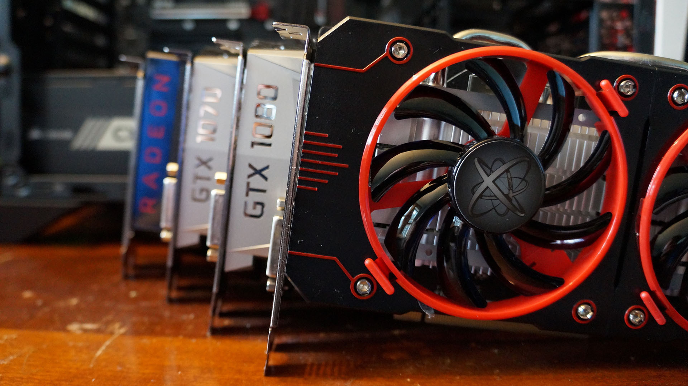
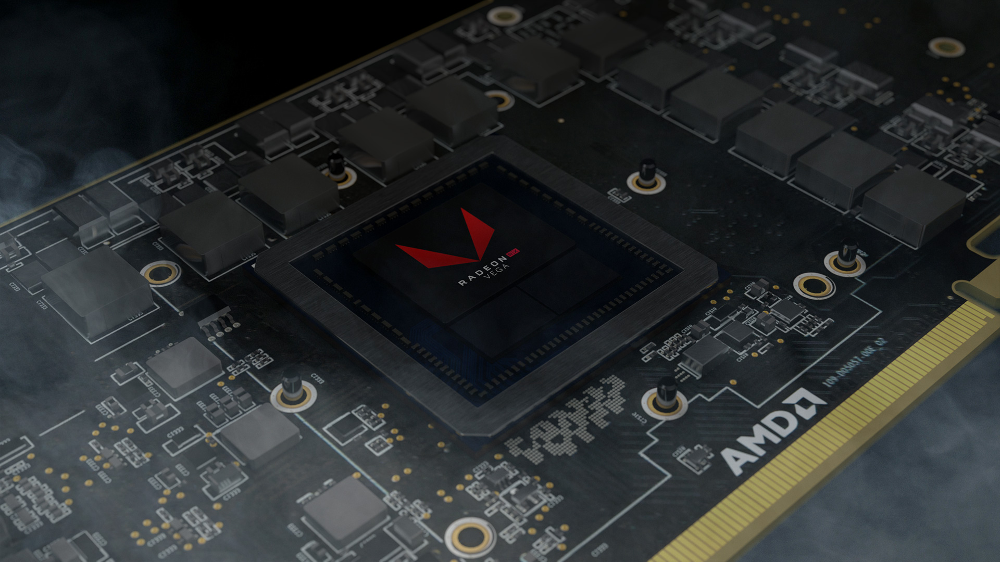
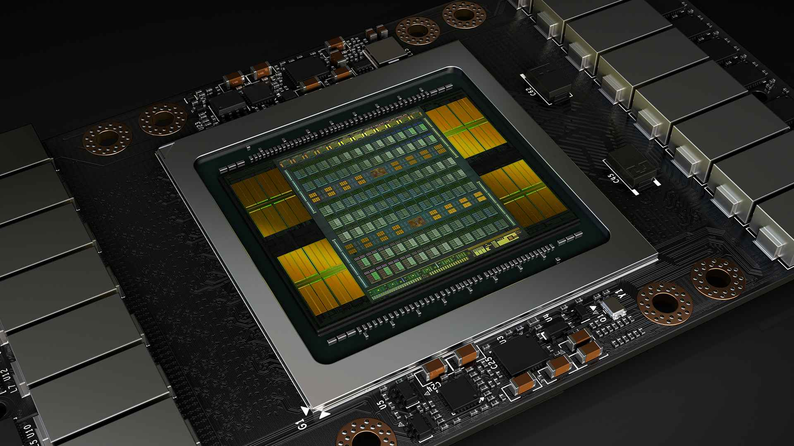

Graphics Card
 





A graphics processing unit (GPU) is a specialized electronic circuit designed to rapidly manipulate and alter memory to accelerate the creation of images in a frame buffer intended for output to a display device. GPUs are used in embedded systems, mobile phones, personal computers, workstations, and game consoles. Modern GPUs are very efficient at manipulating computer graphics and image processing, and their highly parallel structure makes them more efficient than general-purpose CPUs for algorithms where the processing of large blocks of data is done in parallel. In a personal computer, a GPU can be present on a video card, or it can be embedded on the motherboard or—in certain CPUs—on the CPU die.
The term GPU was popularized by Nvidia in 1999, who marketed the GeForce 256 as "the world's first GPU", or Graphics Processing Unit. It was presented as a "single-chip processor with integrated transform, lighting, triangle setup/clipping, and rendering engines", Rival ATI Technologies coined the term "visual processing unit" or VPU with the release of the Radeon 9700 in 2002